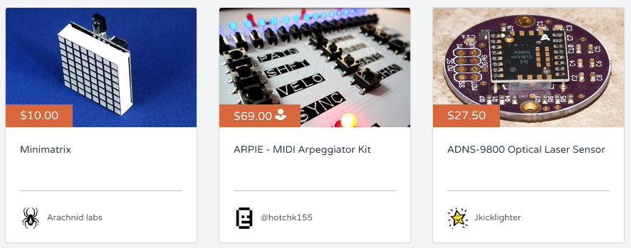
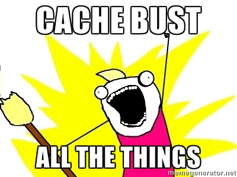

Making Embeddable Web Widgets Without Iframes
The Marketplace for Makers
Widgets
- for seller sites
- easy to put on the page
- look like Tindie products
Simple solution: iframes
<iframe src="https://www.tindie.com/widgetiframe?some=criteria"></iframe>- Doesn't integrate well with parent site
- Multiple widgets per page? Multiple full page loads.

JavaScript-based widgets?
- Load jQuery.
- Detect widget insertion location(s).
- Client side template language.
Sqwidget to the rescue!
It's As Easy As
<!-- where you want a widget -->
<div data-sqwidget='src:tindie.js'
data-sqwidget-settings='query:XXXXXXX'>
Loading Tindie Widget ...
</div>
<!-- near the closing body tag -->
<script
type='text/javascript'
src='https://www.tindie.com/widgets/tindie.js'></script>Browser Caching
tindie.js is templated
url(
r'^widgets/tindie.js$', direct_to_template,
{
'template': 'widgets/tindie.js',
'mimetype': 'text/javascript'
}
)Generates small bootstrap script
(function(w, d) {
w.tindie = {
basePath:"https://www.tindie.com/",
cssfile: "https://d2ss6ovg47m0r5.cloudfront.net/CACHE/css/9f62fae5f58e.css",
STATIC_URL: "https://d2ss6ovg47m0r5.cloudfront.net/",
font_version: "dafe1d746c81"
}
var s = d.createElement("script");
s.type = "text/javascript";
s.async = true
s.src = "https://d2ss6ovg47m0r5.cloudfront.net/CACHE/js/41bab96657e4.js";
d.documentElement.childNodes[0].appendChild(s);
})(window, document);Django-Admin Command Generates Combined Minified Assets
- We use django-compressor; abuse it in to generate the following:
- 1 CSS file
- Use lesscss to pick a subset from main site
- 1 JavaScript file
- Sqwidget
- client-side templates
- widget logic
Data
- Use Tastypie on server side
- jQuery & JSONP to get data and work around same origin problems
jQuery.mapand multiple calls to Sqwidget'swidget.renderWithTemplatefor looping, conditionals